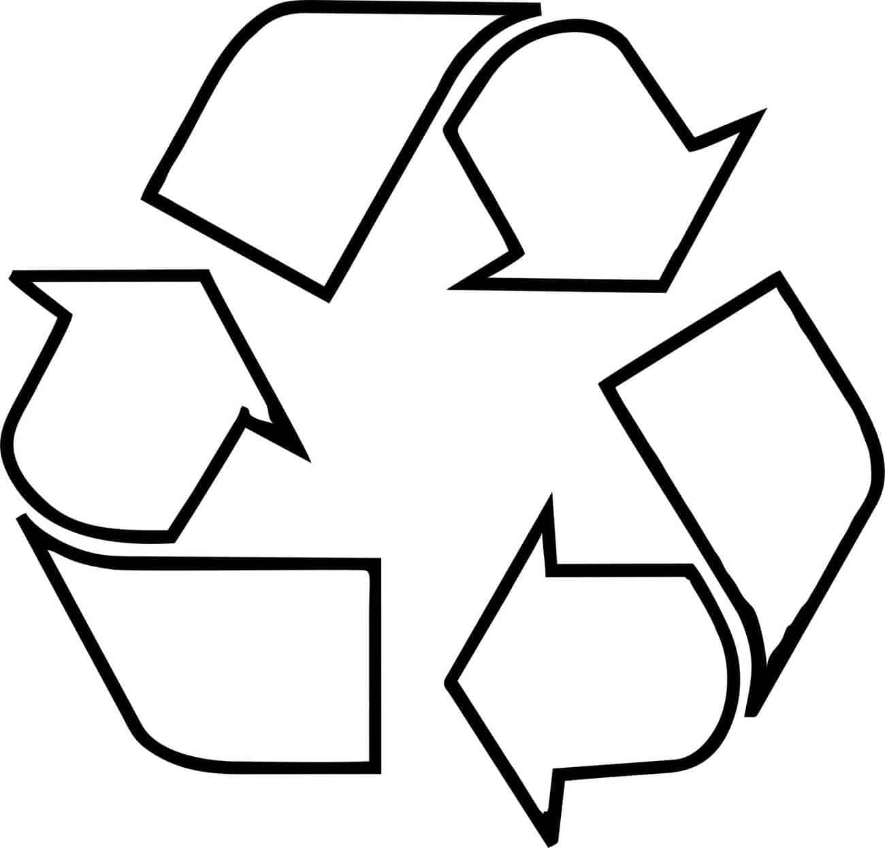

POLIACRILONITRILO

El poliacrilonitrilo (PAN) es un polímero utilizado en la fabricación de fibras sintéticas, se utiliza, por ejemplo, para hacer suéteres y para fabricar telas para carpas.
El poliacrilonitrilo es un polímero vinílico, y un derivado de la familia de los acrilatos poliméricos. Se hace a partir del monómero acrilonitrilo, por medio de una polimerización vinílica por radicales libres.